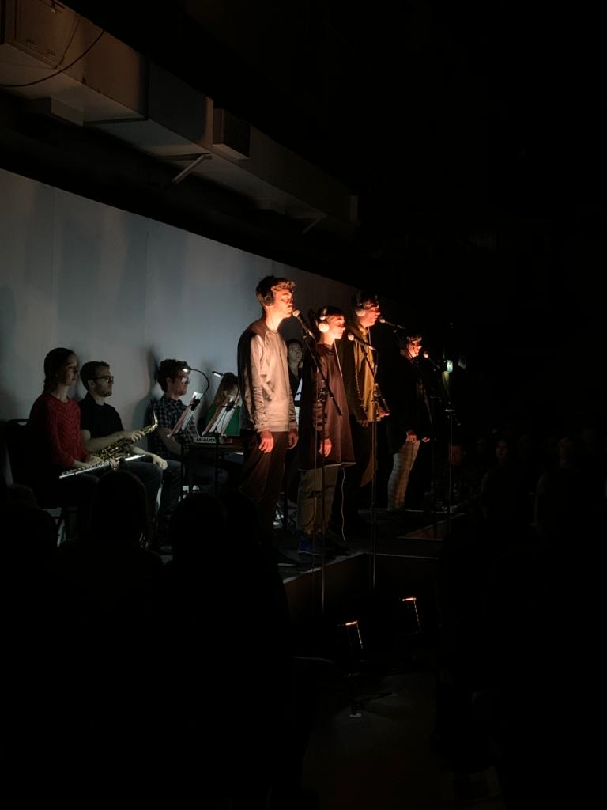

Laughter Studies 6
four performers, ensemble
15 minutes
Laughter Studies 6 starts with four performers describing and imitating various field recordings. After around five minutes, they become fixated on a rhythmic, steadily rising sound. An ensemble joins them, imitating their imitation. At this point the piece goes on a tangent. The ensemble plays their own material, a kind of banal, repeated sequence with a meandering accompaniment. The vocalists dance. This culminates in a solo-off between one dancing performer and a MIDI keyboard drumset. In the final section, performers and ensemble join forces, sing-shouting the original banal sequence repeatedly, ad absurdum.
The Laughter Studies series is based around performers verbally describing and vocally imitating assembled collages of sounds communicated via headphones. The focus of the pieces is on each individual performer's spontaneous reactions to the sounds. In each case, their personal relationship with material from everyday life is foregrounded.
This piece was commissioned by An Assembly in 2017. It was revised for their UK tour in 2018, and further revised for the London Contemporary Music Festival 2019.
The Laughter Studies series is based around performers verbally describing and vocally imitating assembled collages of sounds communicated via headphones. The focus of the pieces is on each individual performer's spontaneous reactions to the sounds. In each case, their personal relationship with material from everyday life is foregrounded.
This piece was commissioned by An Assembly in 2017. It was revised for their UK tour in 2018, and further revised for the London Contemporary Music Festival 2019.
Performances
An Assembly
12/12/2019 London Contemporary Music Festival
04/10/2018 City University, London
02/10/2018 Centrala, Birmingham
02/12/2017 Legroom, Manchester
16/05/2017 City University, London
An Assembly
12/12/2019 London Contemporary Music Festival
04/10/2018 City University, London
02/10/2018 Centrala, Birmingham
02/12/2017 Legroom, Manchester
16/05/2017 City University, London
